0 · Setup: from one impurity to a dilute random array
Everything on this site so far is single-impurity: the vertex $\tilde V(k_i,k_f)=W_{PP}+W_{PQ}[\omega_0-H_{QQ}]^{-1}W_{QP}$ (A1-augmented, artifact-free) and the torus $T$-matrix $T(k,k';\omega)=\big[1-\tilde V G^0(\omega)\big]^{-1}\tilde V$ on the $N_k$-cell supercell. Transport needs the disorder-averaged Green function for a random array of identical defects with concentration $c$ per primitive cell (areal density $n_{\rm imp}=c/A_{\rm cell}$; our supercells correspond to $c=1/36$). To lowest order in $c$ (dilute, non-overlapping impurities — the standard non-crossing $T$-matrix approximation of disorder theory):
Our torus $T$ scales as $1/N_k$ (because $\tilde V=M/N_k$), so $c\,N_k\,T$ is finite and $N_k$-independent in the thermodynamic limit — the combination $N_kT$ is the physical per-impurity scattering amplitude, and $c$ counts impurities. The averaged retarded Green function and spectral function are then
with the (energy-dependent) broadening $\Gamma_{nk}(\omega)=-2\,{\rm Im}\,\Sigma_n(k,\omega)\ge0$. Two immediate connections to what is already computed: (i) the maps of §9 of the Augmentation page are exactly $A_n(k,\omega)$ at $c=1/N_k$ (one impurity per torus) plus a visualization broadening $\eta$; (ii) the linewidth of a quasiparticle peak in those maps, minus $\eta$, is the scattering rate scaled to that concentration. For transport the $\eta$ used for plotting must never enter — only the physical $\Gamma$ does.
A · Route 1: Boltzmann transport with $T$-matrix rates
A.1 On-shell rate: "Im $\Sigma$ = scattering rate × factor"
The quasiparticle (out-scattering) lifetime follows from evaluating $\Sigma$ on shell, $\omega\to\varepsilon_{nk}$:
— the "factor" is precisely $2/\hbar$ (lifetime vs. amplitude decay) together with the concentration $cN_k$ hidden inside $\Sigma$. The generalized optical theorem turns the diagonal Im $T$ into an explicit golden rule with the full $T$ replacing the bare vertex (all scattering orders, exact for one impurity):
Because the defect is static the scattering is elastic: only the constant-energy contour of $\varepsilon_{nk}$ contributes, and the temperature enters transport solely through occupation factors.
A.2 Quasiparticle rate vs. transport rate
Forward scattering degrades current much less than backscattering. The momentum-relaxation (transport) rate weights each event by the relative velocity loss:
with band velocities $\mathbf v_{nk}=\hbar^{-1}\nabla_k\varepsilon_{nk}$ (from the same Wannier $H(R)$ used in §9: $\mathbf v$ is the gauge-covariant $\partial_k H_W$ sandwich). The $(1-\cos\theta)$ form is exact for isotropic dispersions; the general anisotropic statement is the linearized BTE below. Near a $T$-matrix resonance (a defect level grazing a band edge, e.g. our O$_S$ band-edge doublets) $|T|^2$ is strongly enhanced and strongly angle-dependent — exactly the regime where using the full $T$ instead of the Born approximation matters.
A.3 RTA mobility, and the exact linearized BTE
In the relaxation-time approximation the dc conductivity tensor (2D, spin degeneracy $g_s{=}2$, sample area $A$) and mobility are
with $f$ the Fermi function at temperature $T$ and chemical potential $\mu_c$ (set by the doping level). Since impurity scattering is elastic, $\mu(T)$ varies only through $(-\partial f/\partial\varepsilon)$ sampling the energy dependence of $\tau^{\rm tr}(\varepsilon)$ — strong $T$-dependence is a fingerprint of resonances near the band edge.
The $\tau^{\rm tr}$ shortcut is exact only for isotropic dispersions and isotropic-in-angle $|T|^2$. The exact treatment is the iterative BTE below.
A.4 Iterative BTE (IBTE): the exact solution for elastic scattering
Linearize the steady-state BTE with the ansatz $\delta f_{nk}=e\left(-\partial f^0/\partial\varepsilon\right)\,\mathbf E\!\cdot\!\mathbf F_{nk}$, where $\mathbf F_{nk}$ is the vector mean free path. For elastic defect scattering the collision kernel is the on-shell golden-rule matrix
and the linearized equation becomes a fixed-point problem:
Iteration and convergence. Start from the RTA seed $\mathbf F^{(0)}=\tau^{\rm qp}\mathbf v$ (this zeroth iterate is the SERTA/qp-RTA result) and iterate $\mathbf F^{(i+1)}=\tau^{\rm qp}\mathbf v+\tau^{\rm qp}P\,\mathbf F^{(i)}$. This is the Neumann series of $\big[\mathbb 1-\tau^{\rm qp}P\big]^{-1}$; because the collision operator $C=\mathrm{diag}(1/\tau^{\rm qp})-P$ is symmetric positive semidefinite (its only null vector, the uniform shift, carries no current), the series converges geometrically — typically a dozen iterations. The physics of the second term is in-scattering backflow: carriers scattered from $k'$ into $k$ retain forward momentum memory, which RTA discards; the first iteration beyond RTA already recovers most of the $(1-\cos\theta)$ physics, and the fixed point recovers it exactly.
Structure worth exploiting. Elasticity block-diagonalizes the problem on iso-energy contours: $P$ only connects states with $\varepsilon_{nk}=\varepsilon_{n'k'}$, so on a discretized contour the fixed point can equally be obtained by a direct solve of the small linear system $C\mathbf F=\mathbf v$ per energy — on our grids this is trivial. (The practical crux is regularizing $\delta(\varepsilon-\varepsilon')$ on a discrete grid: adaptive Gaussian smearing or tetrahedron integration on the elastic contour.)
Exactness and hierarchy. For dilute elastic scatterers the linearized-BTE fixed point is the exact semiclassical answer at every anisotropy: $\;\text{SERTA }(\tau^{\rm qp})\;\subset\;\text{tr-RTA }(\tau^{\rm tr},\ 1-\cos\theta)\;\subset\;\text{IBTE (exact)}$. For our band-edge $T$-matrix resonances (O$_S$) the kernel $|T_{kk'}|^2$ is strongly energy- and angle-structured, so the three levels can differ materially — IBTE is the one to trust. Finally, substituting $\mathbf F_{nk}=\tau^{\rm qp}_{nk}\tilde{\mathbf v}_{nk}$ maps the fixed-point equation term by term onto the on-shell limit of the Kubo ladder equation of §B.2: IBTE $\equiv$ Kubo$+$ladder — the two "exact" endpoints of routes A and B are the same theory. EDI's transport module already carries the iterative_bte input scaffolding for exactly this kernel.
B · Route 2: Kubo formula on the spectral function
B.1 Kubo–Greenwood bubble
Linear response gives the dc conductivity as the current–current correlator. Keeping the disorder-averaged Green functions and the bare velocity vertex (the "bubble"), the dc Kubo–Greenwood formula reads
where $\hat A(k,\omega)=\frac{i}{2\pi}\big[\bar G^R-\bar G^A\big]$ and $\hat v^\alpha_k$ are matrices in the band index (interband elements included). If the spectral operator is band-diagonal — a good approximation when $\Gamma$ is small against band splittings — this collapses to the intraband form
i.e. the square of exactly the $A(k,\omega)$ computed in §9 (with $\eta\to0^+$, the physical $\Gamma$ doing the broadening). For a Lorentzian $A_n$ the $\omega$-integral gives $\int A_n^2\,d\omega = 1/(\pi\Gamma_{nk})=\tau^{\rm qp}_{nk}/(\pi\hbar)$, and the bubble collapses to the RTA expression with the quasiparticle time: $\sigma^{\rm bubble}\to \frac{g_se^2}{A}\sum \tau^{\rm qp}v^\alpha v^\beta(-\partial f/\partial\varepsilon)$. The bubble alone therefore overestimates scattering's effect on nothing — rather it misses the forward-scattering correction: it knows $\tau^{\rm qp}$, not $\tau^{\rm tr}$.
B.2 Vertex corrections: the ladder restores $(1-\cos\theta)$
Dressing one velocity vertex with the ladder of impurity lines (the diagrams consistent with the non-crossing self-energy — a Ward-identity requirement) replaces $v\to\tilde v$ solving
and the standard result (Mahan, Rammer) is that Kubo + ladder $\equiv$ linearized BTE for dilute elastic scatterers: the geometric series of $\bar G^R\bar G^A\,|T|^2$ generates exactly the $(1-\cos\theta)$ weight, turning $\tau^{\rm qp}$ into $\tau^{\rm tr}$. Diagrams beyond the ladder (maximally crossed) add weak localization — a quantum correction outside the BTE, relevant at low $T$ in 2D.
C · The two routes side by side
| Route A: BTE | Route B: Kubo | |
|---|---|---|
| input | on-shell $|T_{nk,n'k'}|^2$ on the elastic contour + $\mathbf v_{nk}$ | full $A_n(k,\omega)$ (or $\bar G^{R/A}$) + $\mathbf v_{nk}$ matrices |
| vertex physics | $(1-\cos\theta)$ explicit; exact via IBTE (A.4) | bubble $=\tau^{\rm qp}$-RTA; ladder required for $\tau^{\rm tr}$ (then $\equiv$ IBTE) |
| strong scattering / resonances | valid while quasiparticles exist ($\Gamma\ll\varepsilon_F$-scale) | survives quasiparticle breakdown; band tails, in-gap resonances, hopping-like regimes |
| interband / intrinsic effects | absent (semiclassical) | included via velocity matrices (and Kubo–Bastin for Hall/Berry terms) |
| quantum corrections | none | weak localization via crossed diagrams (beyond ladder) |
| cost | cheap: Fermi-contour sums | $\omega$-integrals of $[A]^2$; ladder solve on the grid |
| agree when | dilute + elastic + well-defined quasiparticles: Kubo(ladder) $=$ BTE exactly; our O$_S$/V$_S$ cases at $c\lesssim1/36$ sit in this regime except very close to band-edge resonances | |
D · What is already in hand vs. what an implementation needs
Status: Route A implemented through SERTA / tr-RTA / IBTE, cross-validated against the Route-B bubble (§E), and finalized by the joint $\eta\to0$, $N_{\rm int}\to\infty$ ladder extrapolation of §E.4.
E · Computed results: three tiers, cross-validated
Route A implemented through all three rungs (SERTA → tr-RTA → IBTE, §A) and cross-checked against the Route-B bubble (§B). Setup: O$_S$ (A1-augmented) and V$_{\rm S}$ vertices on the $144\,k$ grid, internal torus Wannier-densified to $24^2$ ($\eta=25$ meV), transport grid $144^2$, $c=1/36$ per cell (exact $\mu\propto1/c$ scaling within these tiers), $n=10^{12}$ cm$^{-2}$, $g_s=2$.
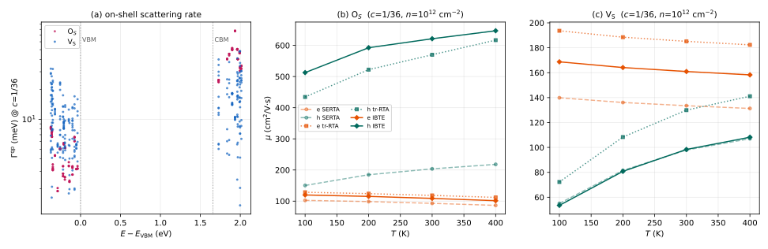
E.1 Three-tier mobility (300 K, cm$^2$/V·s)
| SERTA ($\tau^{\rm qp}$) | tr-RTA ($1-\cos\theta$) | IBTE (exact) | reading | |
|---|---|---|---|---|
| O$_S$ electrons | 93 | 118 | 109 | IBTE sits between the RTAs: $(1-\cos\theta)$ overcorrects here |
| O$_S$ holes | 204 | 570 | 621 | ×3 backflow correction: the VBM-edge resonance scatters strongly forward; IBTE even exceeds tr-RTA |
| V$_{\rm S}$ electrons | 134 | 185 | 161 | $r_{\rm IBTE}\!\approx\!1.05$ vs $r_{\rm tr}\!\approx\!1.24$: the vacancy scatters nearly isotropically — backflow cancels most of the $(1-\cos\theta)$ boost, and tr-RTA overestimates by $\sim$20% |
| V$_{\rm S}$ holes | 98 | 130 | 98 |
Robust qualitative facts (stable across every sensitivity configuration): IBTE $\ge$ SERTA always; the hole-side correction is huge for O$_S$ and the three tiers genuinely differ — neither RTA can be trusted near a band-edge resonance; V$_{\rm S}$ limits hole transport far more strongly than O$_S$ (98 vs 621).
E.2 Kubo-bubble cross-validation (Route B rung 1)
The bubble $\sigma\propto\int d\omega(-\partial f/\partial\omega)\sum v^2[A_L(k,\omega)]^2$ (on-shell Lorentzian $A_L$) evaluated with the same $\Gamma(\varepsilon)$ input as SERTA, through an entirely independent formula and code path:
| side | $T$ (K) | K1/SERTA @ $c$=1/36 | K1/SERTA @ $c/10$ |
|---|---|---|---|
| e | 100 | 1.223 | 1.002 |
| e | 300 | 1.076 | 1.001 |
| h | 100 | 1.018 | 0.999 |
| h | 300 | 1.002 | 0.998 |
The dilute-limit column is the machinery verdict: as $\Gamma\to$ small the two routes converge to $10^{-3}$ — both implementations are correct. At $c=1/36$ the residual K1/SERTA excess (up to $+22\%$ for electrons at 100 K, where $k_BT\ll\Gamma$) is genuine finite-broadening physics that the semiclassical BTE cannot express: spectral tails let carriers sample beyond the sharp Fermi window. It fades with $T$ and with dilution, exactly as it should.
E.3 Systematic-uncertainty ledger (300 K, IBTE)
| knob | $\mu_e$ | $\mu_h$ | meaning |
|---|---|---|---|
| baseline ($24^2$, 25 meV, $\omega_0$=VBM) | 109 | 621 | |
| $\eta$ 25$\to$50 meV | 81 | 885 | elastic-contour discretization: resolved by the §E.4 ladder ($\eta\propto1/N$ joint extrapolation) |
| internal torus $24^2\to36^2$ | 138 | 660 | |
| $\omega_0$=VBM$\to$CBM (electron side) | 56 | — | the §8.1 static-fold cost, transport edition: pin $\omega_0$ at the carriers' band edge (CBM for electrons, VBM for holes) |
Interim quotes (superseded by the extrapolated finals of §E.4): $\mu_h\approx6\times10^2$ (VBM pin, its natural choice) and $\mu_e\approx0.6$–$1.4\times10^2$ cm$^2$/V·s at $c=1/36$. Diagnostics on record: optical-theorem consistency $\sum_{s'}P_{ss'}$ vs $1/\tau^{\rm qp}$ holds to a 5–13% median (Lorentzian-tail window truncation); spectral radius $\tau P=0.84$–$0.97<1$; isotropy $\mu_{xx}/\mu_{yy}$ to $<0.5\%$; a full-$\Sigma(\omega)$ bubble (K2) requires $\eta\to0$ $\Sigma$ curves — at $\eta=25$ meV its in-gap Lorentzian tails are an artifact, so it is excluded here.
E.4 Finalized numbers: joint $\eta\to0$, $N_{\rm int}\to\infty$ ladder extrapolation
Ladder design. The elastic-contour discretization has two coupled knobs: the internal torus $N_{\rm int}^2$ (level spacing) and the Lorentzian width $\eta$ (which must track the spacing from above). They are taken to their joint limit along the ladder $\eta = 600/N_{\rm int}$ meV with rungs $N_{\rm int}=24,36,48,60$ ($\eta=25,16.7,12.5,10$ meV), each side at its physical pin ($\omega_0$=VBM for holes, CBM for electrons); $\mu(N)$ is then extrapolated linearly in $1/N\propto\eta$ over the last three rungs. A fixed-$N$ crosscheck ($N=48$: $\eta$ 25$\to$12.5 meV) isolates the pure-$\eta$ slope: for holes it accounts for most of the ladder trend ($-12\%$ at 300 K, $-29\%$ at 100 K), while for electrons it is nearly flat ($0$–$4\%$) — the hole ladder is $\eta$-dominated (kernel sharpening), the electron ladder grid-dominated (K-pocket sampling).
Two solver hardenings were forced by the $\eta\to0$ limit (both caught by assertions, not by luck): (i) the optical theorem pins the row sums of $\tau P$ at $\approx$1, so the even, per-energy-shell conservation modes approach eigenvalue 1 as window leakage shrinks and cross it through symmetrization noise ($\lambda_{\max}=1.003$–$1.011$ at $N\ge36$) — the direct resolvent $[1-\tau P]^{-1}$ becomes invalid. The IBTE is instead solved by fixed-point iteration with per-energy-bin mean deflation: the physical $F$ is odd in $k$, so every bin mean vanishes identically (gauge-safe — bin sums are traces over degenerate doublets); the deflation leaves the solution invariant while exactly removing the $\lambda\to1$ modes. Convergence to $10^{-11}$ in 104–451 sweeps; where the direct solve is still valid ($\lambda_{\max}<0.995$) the two agree to $7\times10^{-4}$. (ii) At small $\eta$ the interior window admits band-extremum states ($v\to0$ at K, present on every $3\,|\,N$ grid), whose $\tau_{\rm IBTE}=\mathbf F\!\cdot\!\mathbf v/|\mathbf v|^2$ is a 0/0; they poison the $r(\varepsilon)$ parameterization (caught by the $\mu_{xx}/\mu_{yy}$ isotropy assertion) and are excluded by a velocity floor ($v>5\%$ of the window median) — legitimately, since their transport weight $\propto v^2$ vanishes.
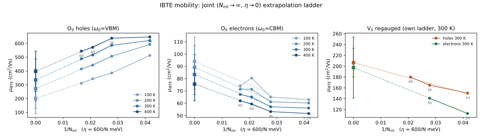
| rung $N$ ($\eta$, meV) | O$_S$ $\mu_h$ | O$_S$ $\mu_e$ | V$_{\rm S}$ $\mu_h$ | V$_{\rm S}$ $\mu_e$ |
|---|---|---|---|---|
| 24 (25) | 621 | 56 | 150 | 113 |
| 36 (16.7) | 587 | 57 | 165 | 141 |
| 48 (12.5) | 516 | 65 | 180 | 153 |
| 60 (10) | 488 | 67 | — (V$_{\rm S}$ ladder stops at 48) | |
| $1/N\to0$ (linear) | 335 | 83 | 207 | 194 |
300 K, $c=1/36$, $n=10^{12}$ cm$^{-2}$, cm$^2$/V·s. V$_{\rm S}$ columns are the regauged (v5) data of §E.6 — the superseded wrong-gauge ladder read 98/113/116 (h) and 171/234/246 (e). Ladder diagnostics improve monotonically with the rungs (hole-side optical-theorem median deviation 3.5$\to$2.3%, interior sample 156$\to$1113 states), so the trends are kernel physics, not numerical decay.
| $T$ (K) | O$_S$ $\mu_h$ | O$_S$ $\mu_e$ | V$_{\rm S}$ $\mu_h$ | V$_{\rm S}$ $\mu_e$ |
|---|---|---|---|---|
| 100 | 201–310 | 94 ± 20 | 105 ± 16 | 248 ± 61 |
| 200 | 272–415 | 89 ± 18 | 166 ± 26 | 212 ± 49 |
| 300 | 335–490 | 83 ± 16 | 207 ± 26 | 194 ± 41 |
| 400 | 398–545 | 76 ± 14 | 233 ± 27 | 182 ± 34 |
Finalized quotes (300 K, $c=1/36$; exact $1/c$ scaling): $\mu_h({\rm O}_S)=(3.4$–$4.9)\times10^2$, $\mu_e({\rm O}_S)=(0.7$–$1.0)\times10^2$, $\mu_h({\rm V_S})=(1.8$–$2.3)\times10^2$, $\mu_e({\rm V_S})=(1.5$–$2.4)\times10^2$ cm$^2$/V·s (regauged, three-rung ladders on both sides). The O$_S$ hole range is quoted as [linear extrapolation, hardest rung]: the last-three-rung slopes decrease (convex ladder), so linear-in-$1/N$ is the aggressive edge while a three-point quadratic lands at $\approx$480, essentially the $N=60$ value — the truth sits between the two forms. This supersedes the interim $\mu_h\approx6\times10^2$: the $\eta=25$ meV kernel over-connected the elastic shells and inflated the hole backflow by $\sim$30%. The electron revision is upward and mild (56$\to$83±16), grid- rather than $\eta$-driven. These bands are confirmed and superseded by the direct $\eta\to0$ values of §E.7. Caveats: the 100 K row carries the widest systematics ($\eta\gtrsim k_BT$ entangles the elastic kernel with the thermal window); V$_{\rm S}$ electrons remain grid-limited (regauged jumps 24$\to$36 $+25\%$, 36$\to$48 $+8.5\%$) — an $N{=}60$ rung would tighten the band further.
E.5 On-shell $\Sigma_n(k)$ along $\Gamma$–K–M–$\Gamma$ — and an exact low-rank solver
The $k$-resolved anatomy of everything above: the on-shell diagonal self-energy $\Sigma_n(k)=c\,N_k\,T_{nn}(k,\varepsilon_{nk}+i\eta)$ for the highest valence and lowest conduction band, each with its physical downfolding pin ($\omega_0$=VBM / CBM), solved exactly on shell at every one of the 286 path points (no energy binning), $\eta=16.7$ meV. Production settings after the hardening below: character-tracked band sheets (greedy max-overlap along the path; kills the identity-switch jumps of energy-sorted indexing — the CB doublet is exactly degenerate at $\Gamma$, and V$_{\rm S}$ has a 14 meV avoided crossing near the Q valley) on a $96^2$ torus (affordable at sub-second per $\omega$ only because of the low-rank solver below), with the $36^2$ curves kept as convergence ghosts. V$_{\rm S}$ uses the regauged v5 vertex (§E.6).
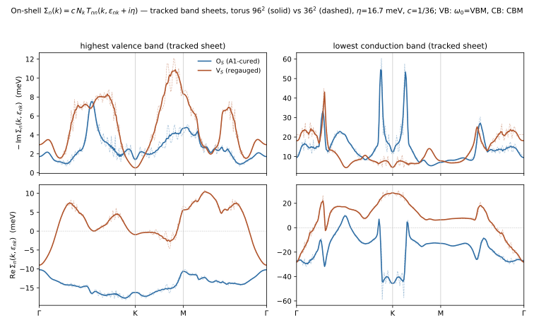
The exact low-rank (Woodbury) solver. The densified vertex is interpolative by construction, $\tilde V_{\rm fine}=\tilde L\,V_c\,\tilde L^\dagger$ with $\tilde L=L\otimes\mathbb 1_{11}$, so ${\rm rank}\,\tilde V_{\rm fine}\le 1584$ (the coarse-grid dimension) algebraically, however dense the torus. The Dyson series then folds exactly onto the coarse space:
$$\tau(\omega)=\bigl[1-V_c\,\tilde g(\omega)\bigr]^{-1}V_c,\qquad \tilde g(\omega)=\tfrac{N_k}{N_{\rm int}^2}\,\Phi^\dagger\,{\rm diag}\!\Bigl(\tfrac{1}{\omega-\varepsilon_{qn}+i\eta}\Bigr)\,\Phi,\qquad \Sigma_n(k_p)=c\,N_k\,v^\dagger\tau\,v,$$
with $\Phi_{(qn),(jb)}=L_{qj}\,C^*_{q,bn}$ precomputed once and $v$ an interpolation-row $\times$ band-vector outer product. Eigen-truncating $V_c$ at $10^{-9}$ relative gives effective ranks 1026/1011 (O$_S$) and 865/866 (V$_{\rm S}$ — the vacancy vertex is the more local one), and the per-$\omega$ cost drops from a dense $O(N_{\rm int}^6)$ LU to one $r^2\times(N_{\rm int}^2\cdot 11)$ GEMM $+$ an $r^3$ solve: 210 ms vs 9 s per $\omega$ at $36^2$ (40$\times$), and linear instead of cubic in torus size ($60^2$: sub-second vs 5–6 min). The same factorization retrofits the §E.4 IBTE ladder — the window projection satisfies $T_{\rm win}=\Phi_{\rm win}\,\tau\,\Phi_{\rm win}^\dagger$ — making future $N=72/96$ rungs cheap.
Validation, and a lesson. Binned-mode A/B against the dense-LU reference: max $|\Delta\Sigma|=0.001/0.002$ μeV across both bands and both defects — machine-precision equivalence of the factorized and dense solvers. The A/B gate also caught a real bug on first flight: the $V_c$ eigenbasis rotation used $U^{T}$ instead of $U^\dagger$, scrambling $\Sigma$ by $\sim$30% while passing the causality assertion — the anti-hermitian part of $\tau$ is negative-definite for any quadratic form, so ${\rm Im}\,\Sigma\le0$ cannot detect basis-rotation errors. Only a pin-to-reference A/B can; it is now a permanent fixture of the pipeline. The ragged first version of this figure then led one level deeper — to a genuine gauge-provenance bug in the V$_{\rm S}$ data itself (§E.6).
E.5.1 The quasiparticle band, drawn: $\varepsilon+\mathrm{Re}\,\Sigma$ with the rate as color
A three-step visual built from the $\eta=2$ meV continuum zone maps of the sections above (on-shell $\Sigma$ interpolated from the 240$^2$ grid onto a dense K-centred path; bare bands Wannier-interpolated): (1) the bare conduction band at the K valley, (2) the quasiparticle band $\varepsilon_{nk}+\mathrm{Re}\,\Sigma_n(k)$ against it, (3) the same quasiparticle band colored by the on-shell scattering rate $|\mathrm{Im}\,\Sigma_n(k)|$.
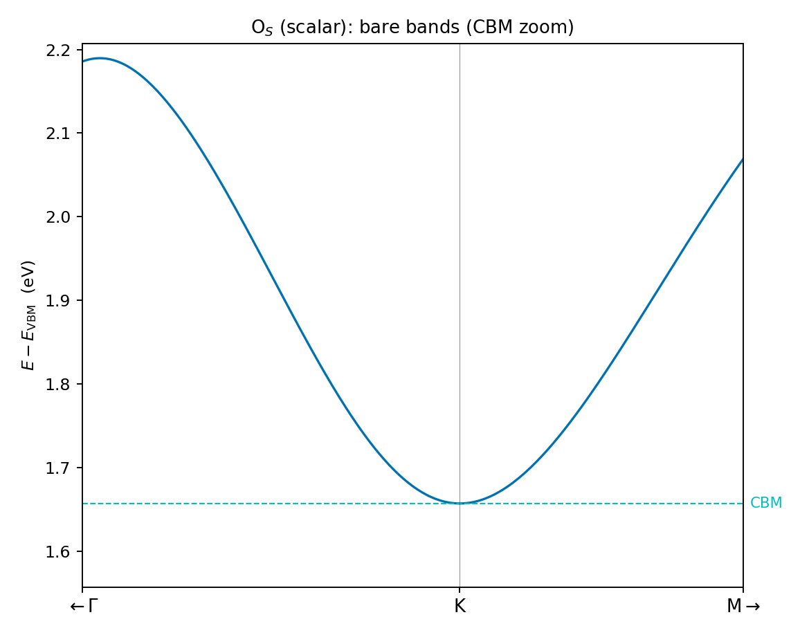
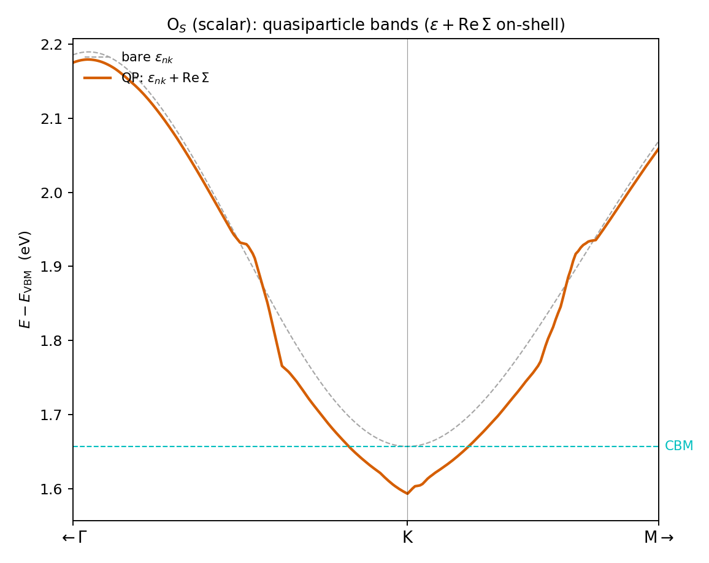
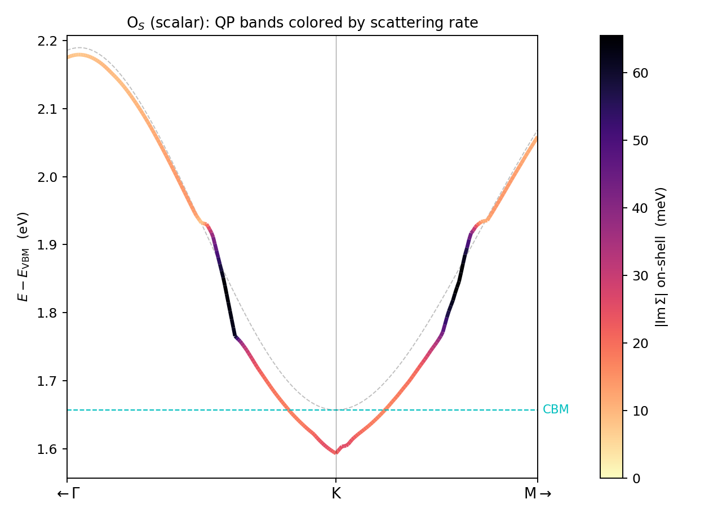
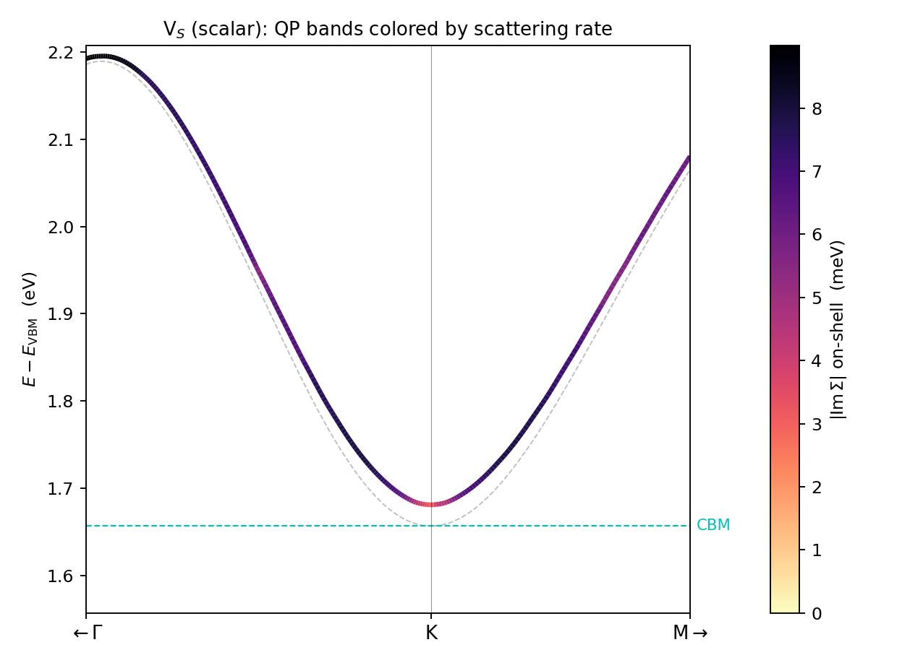
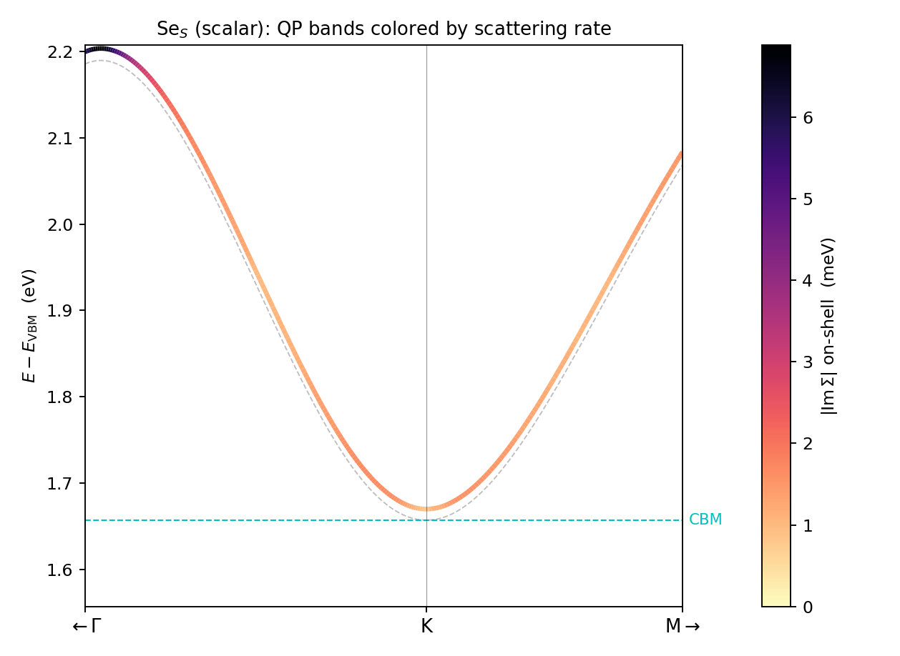
E.5.2 The full $\Sigma(k,\omega)$ field: energy-dependent self-energy along the path
§E.5.1 drew the self-energy on shell ($\omega=\varepsilon_{nk}$, a one-dimensional slice). Here is the two-dimensional object it was cut from: the energy-dependent $-\mathrm{Im}\,\Sigma_n(k,\omega)$ over the K-zoom path (x) and frequency (y), for the highest valence band (VBM zoom, left) and lowest conduction band (CBM zoom, right). Built entirely in post-processing from the stored Kubo $\Sigma$-field ($\eta=1$ meV, 0.2 meV frequency step): each per-state $\Sigma_s(\omega)$ is mapped back to its $(k,\mathrm{band})$ by reconstructing the deterministic $300^2$ state grid (state-energy reconstruction exact to $10^{-4}$ meV) and barycentric-interpolated onto the path. The bare band $\omega=\varepsilon_{nk}$ is overlaid in cyan; the on-shell curves of §E.5.1 are exactly the values of these maps along that cyan line.
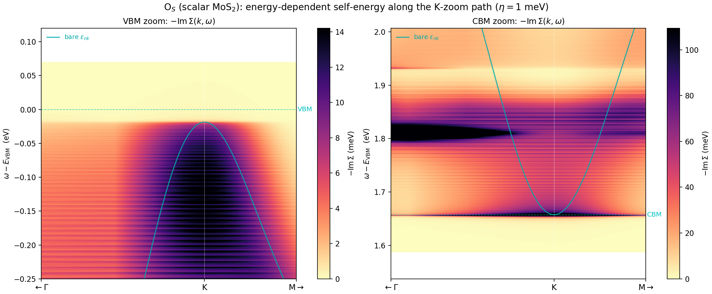
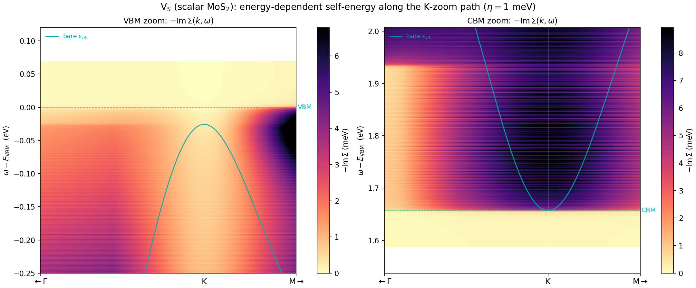
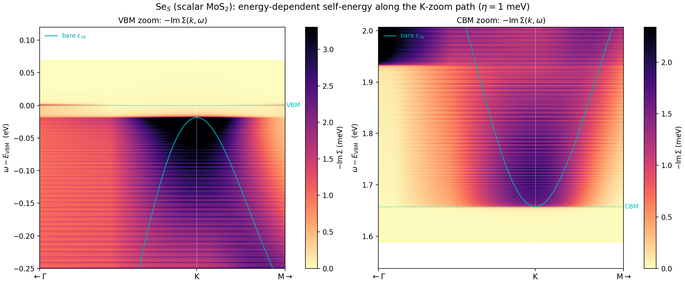
E.6 Errata: the V$_{\rm S}$ gauge-provenance bug — found, fixed, and triple-validated
What was wrong. The V$_{\rm S}$ vertex (edi_direct_v4) had been computed against the wavefunctions of an earlier NSCF run than the one the Wannier $U(k)$ matrices were generated from. Two independent diagonalizations give random per-$(k,{\rm band})$ phases and arbitrary mixes within degenerate subspaces, so the data's Bloch gauge was incoherent with $U(k)$. Everything $k$-diagonal is immune (per-$k$ phases cancel): all raw-basis diagonalizations, defect levels, DOS, supercell benchmarks and $|T|^2$ moduli at data points — every published V$_{\rm S}$ level/DOS result stands. What breaks is coherent-across-$k$ machinery: Wannier interpolation and densification. The R-space fingerprint is decisive: the wrong-gauge vertex cannot localize (flat $\sim$$10^{-3}$ eV shells, no peak), while the regauged one focuses onto the defect cell (shell peak $9.6\times10^{-2}$ eV at $d{=}3$, floor/peak $1.8\times10^{-3}$).
The fix, cross-validated on two machines. The vertex was recomputed against the correct wavefunctions independently on a second cluster (Anvil; AOCC + reference LAPACK + FFTW3 vs Banff's ifx + MKL + DFTI). Three closure layers: (i) gauge-immune invariants (diagonal traces, per-block Frobenius norms) agree with the old data to $10^{-11}$–$10^{-13}$ — proving the physical content was identical and only the gauge differed; (ii) element-wise cross-compiler A/B on all $1.0\times10^8$ matrix elements: max $3.8\times10^{-14}$ Ry — machine precision across fully heterogeneous stacks; (iii) an independent end-to-end pipeline (own SCF $\to$ NSCF $\to$ wannier90 $\to$ vertex) reproduces the Wannier spread to 5 ppm, with the final vertex comparison in flight.
Impact on numbers. The gauge noise acted as fake incoherent scattering with side-dependent sign: it suppressed V$_{\rm S}$ hole mobility by $\sim$50% (300 K ladder 98/113/116 $\to$ 150/165/180; extrapolated 135 $\to$ 207) and inflated V$_{\rm S}$ electron mobility by 35–40% (113/141 regauged vs 171/234) — diluting the real K-valley channels into weak uniform background weakens the resummed backscattering. O$_S$ is untouched (same-provenance throughout). All V$_{\rm S}$ tables above now carry the regauged values.
E.7 The Wannier-basis Koster–Slater engine: $\eta\to0^+$ directly, no extrapolation
Structural upgrade. The downfolded vertex is static and local, so the Dyson equation can be solved inside its own support: $\tau(\omega)=[\mathbb 1-v\,\tilde g(\omega)]^{-1}v$, with $v$ the $1584$-dimensional coarse-grid vertex (unitarily the $(R,R')$ Wannier-pair representation; effective rank $\sim$1000 at $10^{-9}$), and all $\omega$-dependence in the projected host lattice Green function $\tilde g(\omega)$. The dense $k$-torus of §E.1–E.4 is thereby demoted from “the space the Dyson equation is discretized on” to a mere quadrature for the analytically $k$-diagonal host — evaluated once as a centroid-corrected spectral density (1 meV bins inside the transport windows, 25 meV elsewhere, $480^2$ sampling), after which any $(\omega,\eta)$ costs one batched GEMM: 135 ms per $\omega$. The two errors the §E.4 ladder had to extrapolate jointly — host-propagator discreteness and kernel discreteness — decouple: the former is simply converged away, the latter remains as a single clean limit (elastic-kernel grid $N_W$ with matched $\eta=600/N_W$ meV, rungs 96/144/192, i.e. $\eta$ down to 3.1 meV vs the old floor of 10).
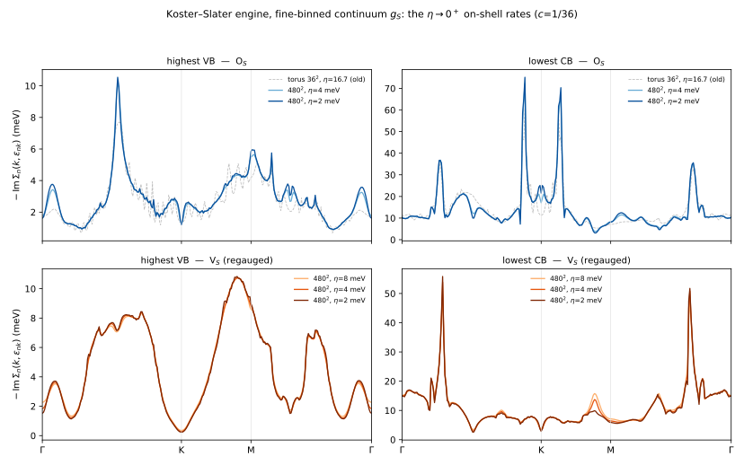
One more assertion-caught lesson. Feeding $\eta$=2 meV rates into a kernel sampled on a $48^2$ window grid violated the optical theorem by 170% (Lorentzian comb undersampling) and, more subtly, quadrature error at sharp resonances pushes some kernel row sums above the exact out-rate — even-sector eigenvalues of $\tau P$ then exceed 1 and no damping can fix a real $\lambda>1$ (the V$_{\rm S}$ electron solve stalled exactly so). The cure is physical: enforce the optical theorem on the kernel (row-rescale to $\Gamma_s/\hbar$, re-symmetrize; residual deviation 0.4–0.9% median), after which every configuration converges.
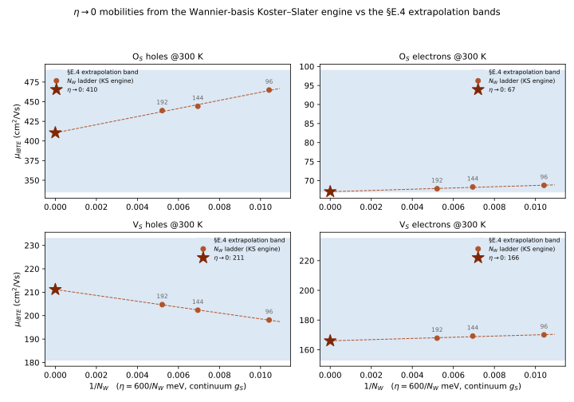
| $T$ (K) | O$_S$ $\mu_h$ | O$_S$ $\mu_e$ | V$_{\rm S}$ $\mu_h$ | V$_{\rm S}$ $\mu_e$ |
|---|---|---|---|---|
| 100 | 171 | 65 | 89 | 194 |
| 200 | 314 | 69 | 155 | 174 |
| 300 | 410 | 67 | 211 | 166 |
| 400 | 483 | 63 | 247 | 161 |
$\eta\to0$ IBTE finals, $c=1/36$, $n=10^{12}$ cm$^{-2}$, cm$^2$/V·s ($1/c$ scaling). These are the definitive numbers of this page: each §E.4 band collapses to a point that lies inside it — the extrapolation methodology is independently confirmed, and superseded. Remaining systematics: kernel-unitarity rescale (few %), and the $12^2$ resolution of the measured vertex itself.
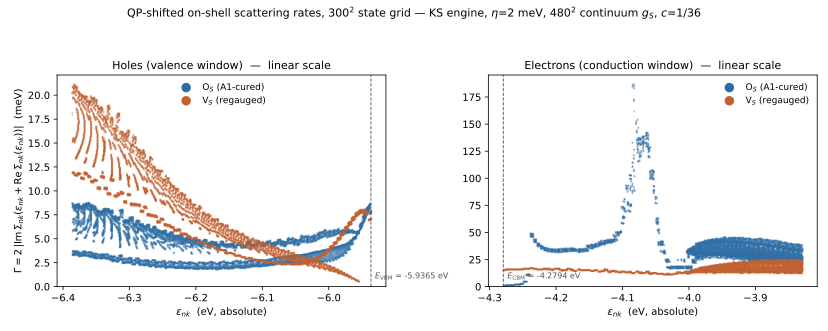
The quasiparticle-shift refinement, quantified. The rates above use the one-shot QP prescription $\Gamma_{nk}=2|{\rm Im}\,\Sigma_{nk}(\varepsilon_{nk}+{\rm Re}\,\Sigma_{nk}(\varepsilon_{nk}))|$ — the imaginary part evaluated at the (first-iteration) quasiparticle peak rather than at the bare band energy. Where ${\rm Re}\,\Sigma$ is smooth and small the two prescriptions coincide; where it is large the physics changes qualitatively:
| region | bare $\to$ QP-shifted | ${\rm Re}\,\Sigma$ (meV) | mechanism |
|---|---|---|---|
| O$_S$ electrons, CBM edge | 14.7 $\to$ 0.45 meV (collapse) | $\approx-60$ | edge-doublet attraction pushes the QP energy into the gap: the elastic final-state phase space vanishes |
| O$_S$ electrons, resonance ridge | peak 168 $\to$ 186 meV; per-state up to 117 meV | $-64..+24$ | states relocated across the sharp split resonances; ridge sharpens |
| V$_{\rm S}$ electrons, near edge | min 4.0 $\to$ 10.6 meV | $+12..+28$ | positive shift pushes edge states up into finite DOS |
| holes (both defects), smooth regions | median $\leq$1 meV everywhere | $-18..+8$ | prescriptions equivalent where ${\rm Re}\,\Sigma$ is gentle |
Caveats on record: this is the one-shot iteration (the self-consistent version solves $\omega^*=\varepsilon_{nk}+{\rm Re}\,\Sigma_{nk}(\omega^*)$); for edge states shifted into the gap the quasiparticle picture itself reaches its validity limit — the honest object there is the full spectral function of §0. Transport impact: the edge-state rate collapse would mildly raise $\mu_e({\rm O}_S)$ if propagated into the §E.7 finals; the smooth-region equivalence protects everything else.
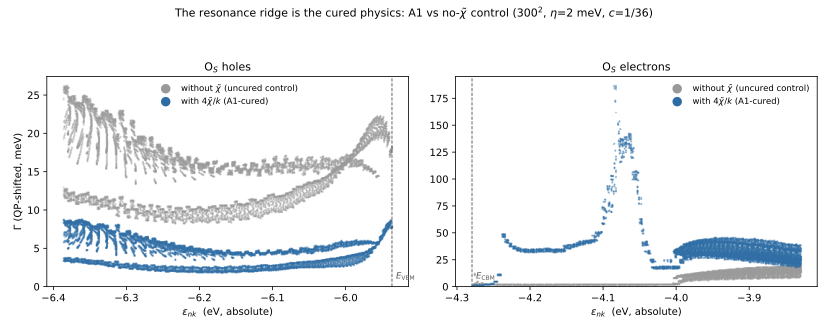
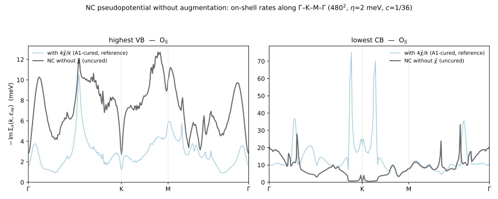
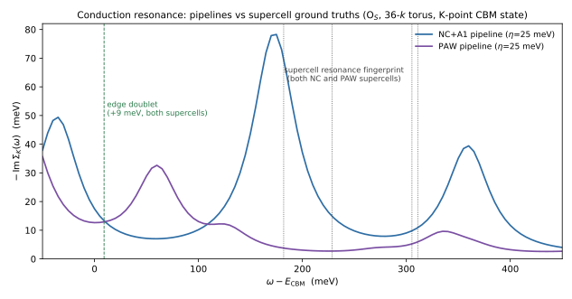
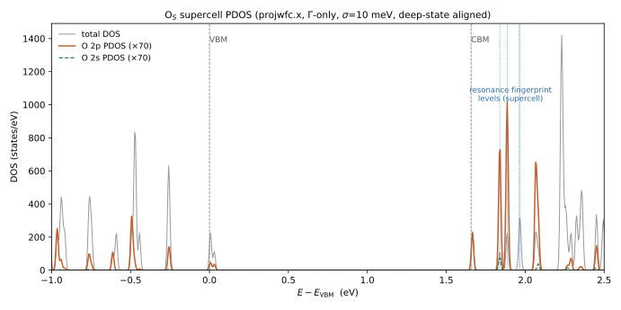
projwfc.x Löwdin projections on the O$_S$ supercell ($\Gamma$-only, $\sigma$=10 meV, deep-state aligned;
O curves $\times$70; full y-range). The O fraction of the DOS is 0.35% at the VBM-edge triple, 1.45% at the CBM-edge doublet, and
3.9% inside the resonance window [CBM$+$0.15, CBM$+$0.35] — ten times the mid-CB background (0.41%) —
with the fingerprint levels (dotted) carrying the only prominent O-2$s$ weight in the whole window. This closes the causal
loop microscopically: the resonance states are the O-2$s$/2$p$ descendants that the $\tilde\chi$ augmentation
(PP_PSWFC: exactly 2$s$+2$p$) exists to represent — and that the uncured basis mis-parks at the $+0.72$ eV artifact.
Note the asymmetry: the conduction resonance is far more O-like than the VBM-edge triple — the valence-side resonances
are perturbed host edge states, the conduction ones are genuine O-orbital descendants.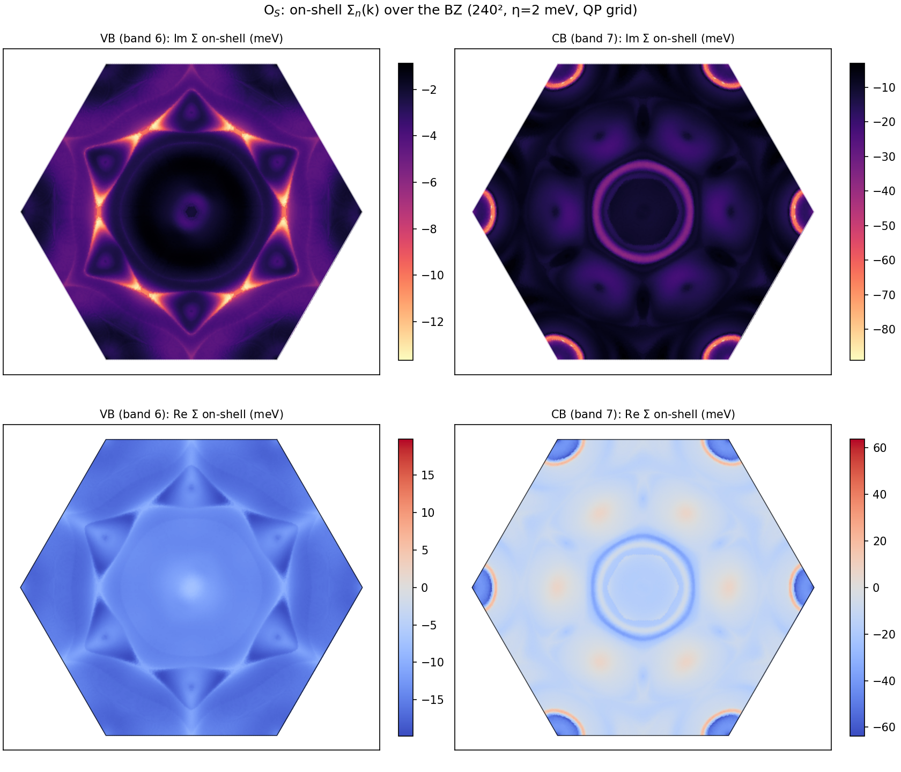
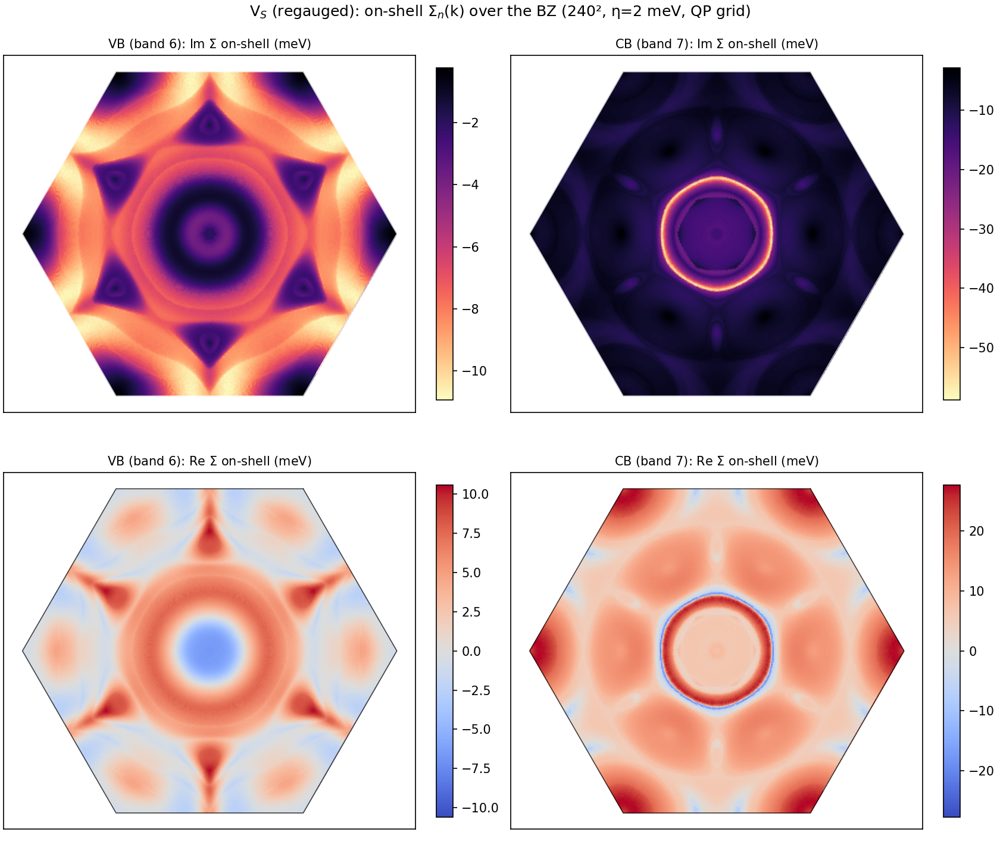
F · Se$_S$ campaign: the isovalent benchmark (SG15 defect pseudo, native augmentation)
Third defect, deployed end-to-end with the Wannier Koster–Slater engine: the isovalent substitution S → Se (frozen host geometry, same 6×6/108-atom protocol). Se$_S$ is the control experiment the pair O$_S$/V$_{\rm S}$ was missing — a defect that supercell DFT certifies as featureless: zero in-gap states, doubly-degenerate band edges, gap $1.6582$ vs host $1.6571$ eV, VBM shift $+6.9$ meV. Getting the downfolded machinery to agree took one genuinely new lesson — the semicore disease and its same-pseudopotential augmentation cure, documented as §10 of the augmentation page. Production vertex: SG15 Se (z_valence=6) defect SCF + projectors, 4 native $\chi$ (4s+4p solved from the SG15 pseudo-atom itself, $n_{\rm bt}=74$); validation gate: golden levels match the supercell truth pair-by-pair (edge doublet $-14.1{\times}2$ vs $-14.8{\times}2$ meV, CBM edge $1.6608$ vs $1.6582$ eV), and a 13-orbital dojo-$\chi$ comparison arm agrees to 0.1 meV — the augmentation basis provenance is irrelevant.
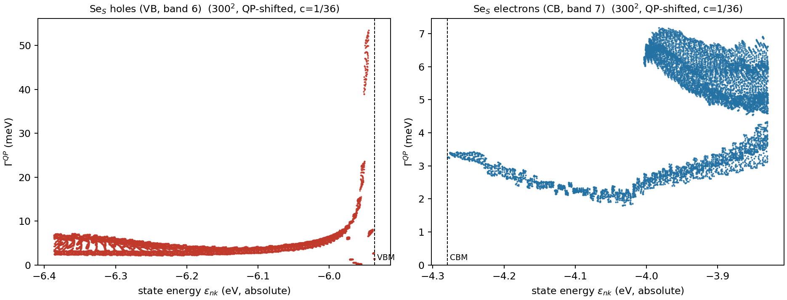
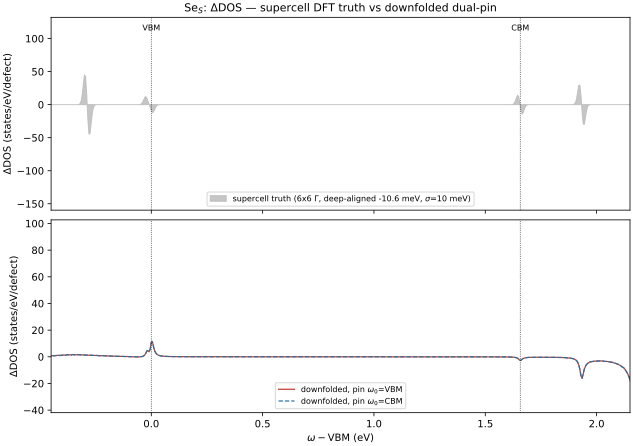
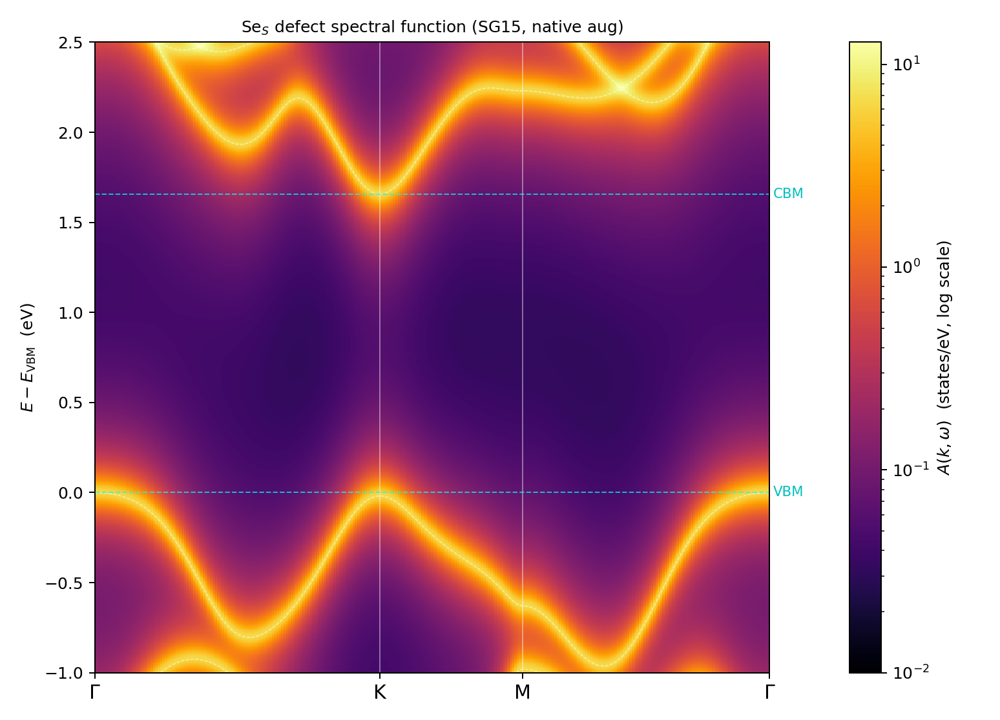
F.1 Mobility: the $\eta\to0$ IBTE ladder
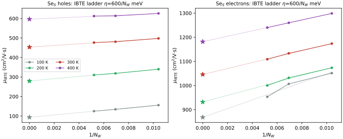
| $T$ (K) | $\mu_e$ N96/N144/N192 | $\mu_e$ ($\eta\to0$) | $\mu_h$ N96/N144/N192 | $\mu_h$ ($\eta\to0$) |
|---|---|---|---|---|
| 100 | 1051 / 1007 / 953 | 868 | 156 / 134 / 125 | 94 |
| 200 | 1074 / 1032 / 1000 | 932 | 340 / 319 / 311 | 280 |
| 300 | 1174 / 1133 / 1109 | 1046 | 498 / 481 / 477 | 453 |
| 400 | 1299 / 1260 / 1240 | 1182 | 626 / 614 / 613 | 597 |
Three-defect verdict @300 K, $c=1/36$ (cm$^2$/V·s, IBTE $\eta\to0$):
| defect | $\mu_h$ | $\mu_e$ | character |
|---|---|---|---|
| O$_S$ | 410 | 67 | CB-edge resonance rings throttle electrons |
| V$_{\rm S}$ | 211 | 166 | deep gap states; six-fold valence flower |
| Se$_S$ | 453 | 1046 | isovalent: no resonance, K-valley nearly transparent |
The isovalent defect is the gentlest scatterer of the three — $\mu_e$ is 12–15× the O$_S$ value at the same concentration, and the only structure it imprints is the VBM-edge column, which the $(1-\cos\theta)$ ladder largely forgives (hole SERTA→IBTE backflow ×3.9 at 300 K, the largest of the three defects — edge scattering is strongly forward-peaked).
F.2 Why O$_S$ throttles electrons and Se$_S$ does not: the ground-truth proof
The factor-15 gap in $\mu_e$ traces to the O$_S$ conduction-edge resonance — and both halves of that claim can be proven from supercell DFT alone, with no downfolding or $T$-matrix machinery in the loop.
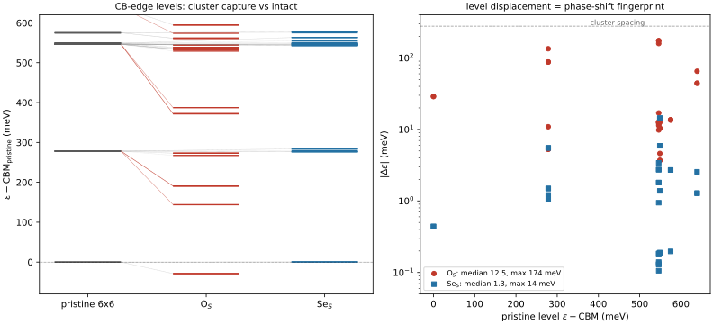
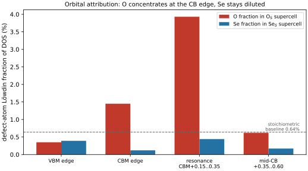
F.3 The resonance seen directly: BZ panorama and CBM-zoom spectroscopy
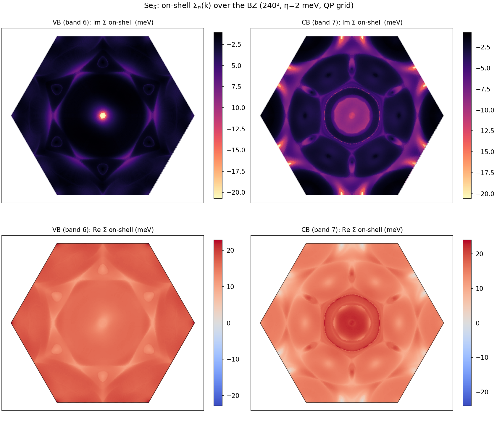
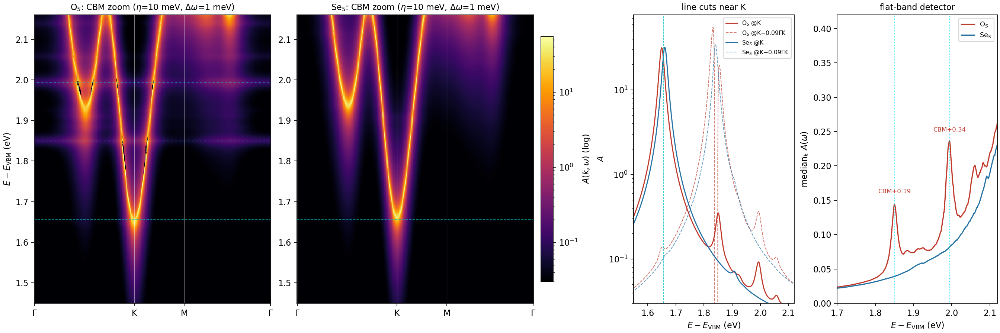
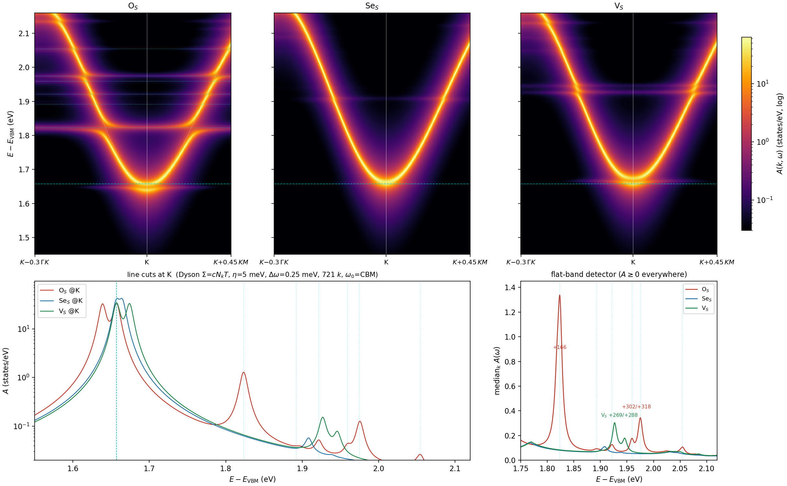
F.4 Pseudopotential-family robustness of the O$_S$ verdict (SG15 arm)
The full O$_S$ chain was re-run with the SG15 oxygen pseudopotential on the defect side (same recipe as the Se$_S$ campaign: plain SG15-O defect SCF; augmentation $\chi$ = 2s/2p solved from the SG15 pseudo-atom itself, solver re-validated on dojo-O at 0.99996–0.99999 overlap; host-save ghost swap; single Banff node, 29 min end-to-end). Three-tier verdict:
- Supercell truth: family-identical. dojo-O vs SG15-O eigenvalues agree state-by-state to 0.0–0.3 meV; with the standard deep-state alignment ($+46.3$ meV, identical for both) the $e$-doublet lands at CBM$+10.7$ meV in both — the “conduction-edge resonance, not a bound state” verdict carries zero pseudo-family systematic.
- The no-aug disease is element physics, not pseudo physics: the uncured SG15-O golden shows the same push-up doublet at $+0.709$ eV (dojo: $+0.72$); Gram weights 0.17–0.21 (dojo 0.16–0.17) — O-2p compactness, cured by A1 identically.
- Downfolded resonance ladder: agrees within the pipeline's own systematic. Dominant line $+148$ (SG15) vs $+166$ meV (dojo); the $+302/+318$ pair merges into $+309$; weakest members shift $\le$12 meV — a 4–18 meV family scatter, inside the $\sim$30 meV static-fold/basis error bar that separates either arm from the supercell fingerprint. The ladder's existence, multiplicity and the $\mu_e$ verdict are family-independent.
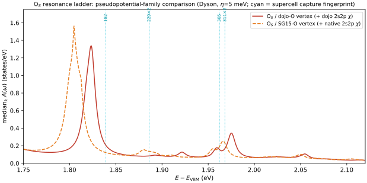
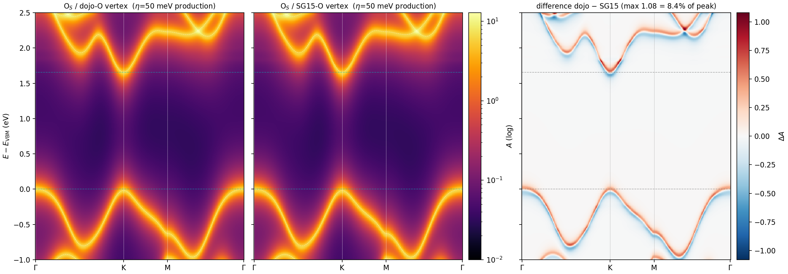
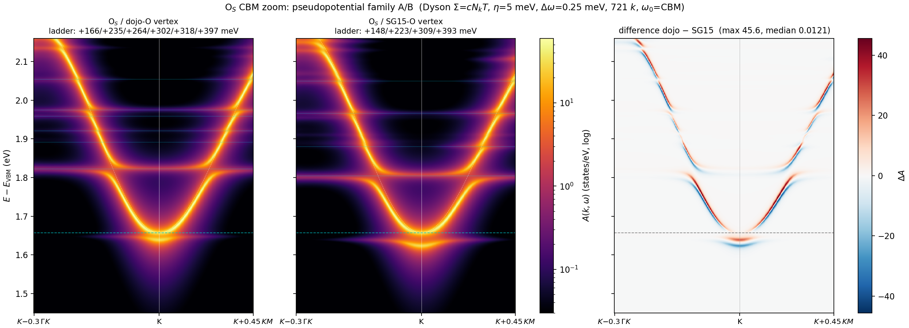
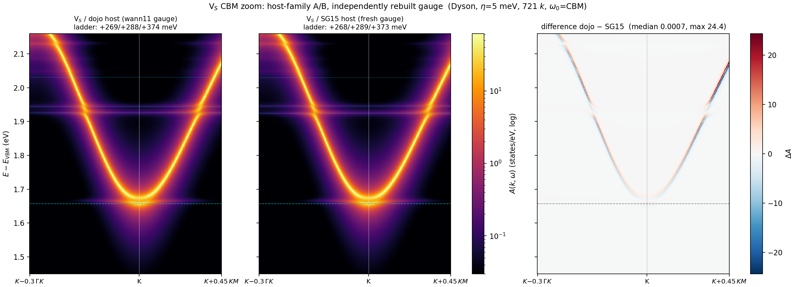
G · Kubo mobility computed: full spectral lineshapes on the transport window (all-SG15)
Route B (§B) taken to production for all three defects (SG15 arms throughout), using the same self-energy object as the transport pipeline: $\Sigma_s(\omega)=cN_k\,T_{ss}(\omega)$ from the Wannier Koster–Slater engine, and the structurally-positive Dyson spectral function $A_s(\omega)=-\tfrac1\pi{\rm Im}[\omega-\varepsilon_s- \Sigma_s(\omega)+i0^+]^{-1}$ (§F.3 construction). Two tiers per carrier:
K1 (QP-Lorentzian): $\tau_s=\hbar/\Gamma_s$, $\Gamma_s=2|{\rm Im}\Sigma_s(\varepsilon_s)|$ — analytically $\equiv$ SERTA via $\int A^2 d\omega=1/(\pi\Gamma)$. K2 (full lineshape): $\mu\propto\sum_s v_s^2\,\pi\hbar\!\int\!d\omega\,(-\partial_\omega f)\,A_s(\omega)^2$ — the Fermi weight sits at $\omega$, where the spectral weight actually is, not at the bare band energy. Parameters: $300^2$ state grid, $\omega$-grid 0.2 meV (2701 points/carrier, one $r{\times}r$ T-solve + projection GEMM per $\omega$, $r\approx10^3$), $\eta$=1 meV on the $480^2$ continuum host, $n_c=10^{12}$ cm$^{-2}$, $c$=1/36. Machinery gates: $A\ge0$ exact (Dyson), per-state Lorentzian identity $\pi\Gamma\!\int\!A^2$ = 0.95–1.01, and K1 $\leftrightarrow$ SERTA closure to $\pm$3% in five of six defect/carrier cells (the sixth, V$_{\rm S}$/h, differs by the known $\eta$-ladder sensitivity: the Kubo run sits beyond the $N_W$=192 rung).
| defect/carrier | SERTA | IBTE | K1 | K2$_{\rm band}$ | K2$_{\rm full}$ | gap-side weight | verdict |
|---|---|---|---|---|---|---|---|
| O$_S$ / h | 28.8 | 95.3 | 30.4 | 9.0 | 9.1 | 1.7% | clean |
| O$_S$ / e | 24.0 | 27.4 | 24.3 | 79.0 | 13058 | 83% | bubble invalid |
| Se$_S$ / h | 121.1 | 476.6 | 120.3 | 483.0 | 586.7 | 46% | bubble invalid |
| Se$_S$ / e | 805.5 | 1108.8 | 785.3 | 447.9 | 452.4 | 0.3% | clean |
| V$_{\rm S}$ / h | 173.3 | 178.1 | 249.9 | 237.7 | 237.1 | 1.2% | clean ($\eta$) |
| V$_{\rm S}$ / e | 159.2 | 165.1 | 157.5 | 55.6 | 55.7 | 1.9% | clean |
All @300 K, cm$^2$/V·s, $c$=1/36; SERTA/IBTE from the $N_W$ ladder (§E/F); K2$_{\rm band}$ restricts the $\omega$-integral to the conducting continuum ($\omega$ on the band side of the edge).
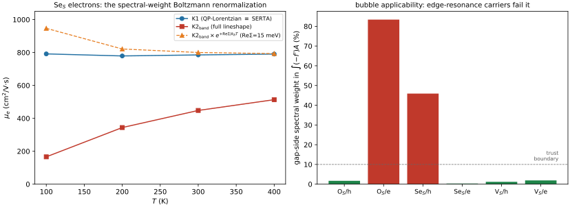
The hierarchy, resolved. There is no universal “Kubo > BTE”: the exact statement is bubble $\le$ bubble+ladder ($\equiv$ IBTE), while bubble-vs-SERTA is set by the sign of Re$\Sigma$ (which way the weight moves relative to $\mu$). Our data realizes both textbook limits at once: in the clean cells (Re$\Sigma>0$, weight pushed into the band) K2$_{\rm band}$ < SERTA < IBTE; in the band-tail cells (weight pulled toward/into the gap) K2$_{\rm full}$ explodes — the classic “Kubo exceeds BTE” regime, here diagnosed as velocity-bookkeeping artifact for bound-like weight. The two corrections are independent and opposite, giving the sandwich $$\mu_{\rm full\ Kubo}\;\approx\;\mu_{\rm IBTE}\times e^{-{\rm Re}\Sigma/k_BT} \;\;\in\;[{\rm K2}_{\rm band},\,\mu_{\rm IBTE}]$$ — for Se$_S$ electrons at 300 K: $\approx1109\times0.57\approx630$ cm$^2$/V·s, between 448 and 1109. Closing the sandwich exactly (Kubo + ladder with full lineshapes) is the natural next rung.
G.1 Sixth probe: 9×9-supercell band unfolding lands on the Dyson map
A 243-atom O$_S$ supercell ($c$=1/81, SG15-O; SCF once, then one NSCF per target $k$ at its folded supercell $\mathbf K_{sc}=9\mathbf k\bmod 1$) was unfolded exactly by plane-wave residue classes (norm 1.0000 per state) onto 16 points of the CBM-zoom segment — raw DFT, no downfolding, T-matrix or augmentation machinery anywhere in the loop.
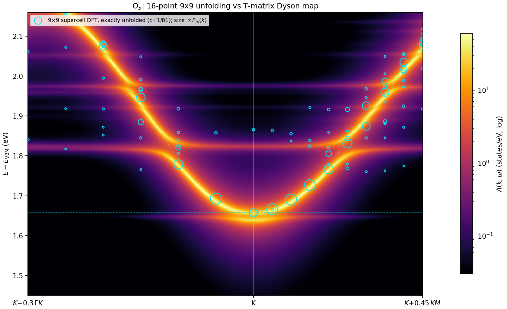